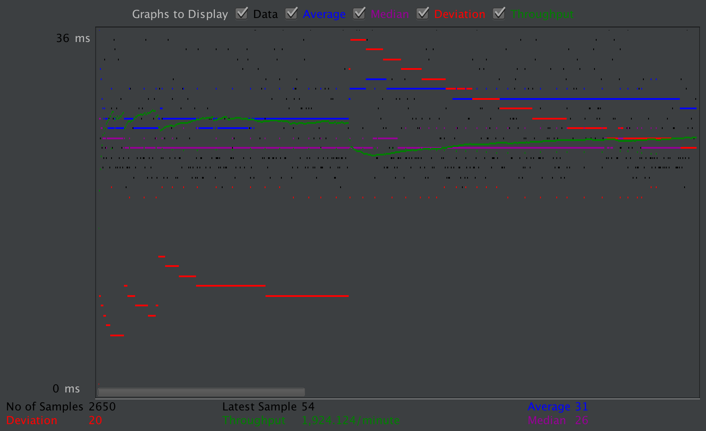

| Single-instance version cases |
Graph Results Screenshot |
Average Query Time(ms) |
Average Search Servlet Time(ms) |
Average JDBC Time(ms) |
Analysis |
| Case 1: HTTP/1 thread |
|
28 |
3.02 |
2.97 |
In this test, we analyze that both the average search servlet time and the average JDBC time is lower than most. With this, I can assume that the average query time decreases as the the amount of threads used are less. |
| Case 2: HTTP/10 threads |
 |
35 |
9.22 |
9.19 |
In this test, the average query time is near the middle compared to other instances. We are using connection pooling and prepared statements, so those also decrease the overall time needed to run the test. |
| Case 3: HTTPS/10 threads |
|
45 |
10.51 |
10.47 |
With HTTPS, although still using connection pooling and prepared statements, it takes a little bit longer than regular HTTP. We assume the reason for this is because it takes a little longer to create a secure connection for accessing the website. |
| Case 4: HTTP/10 threads/No prepared statements |
|
58 |
31.84 |
21.60 |
No prepared statements seem to significantly cause the speed of the test to run a lot slower. We assume the reason for this is because it requires us to create new statements everytime the query runs once. We are not able to reuse the statements as if they were already prepared. |
| Case 5: HTTP/10 threads/No connection pooling |
|
46 |
12.26 |
12.21 |
In this test, we got rid of pooling in the single instance. Connection pooling seems to slightly help the speed of the test. The reason for this is because we can reuse database connections for different requests. In other words, we only need to create 1 connection and then use that connection multiple times (in our case 2650 times) for each movie request search. |
| Scaled version cases |
Graph Results Screenshot |
Average Query Time(ms) |
Average Search Servlet Time(ms) |
Average JDBC Time(ms) |
Analysis |
| Case 1: HTTP/1 thread |
 |
31 |
3.30 |
3.22 |
This test also reaffirms the idea that less threads mean quicker test runs. The test speed here that is scaled is similar to the single instance, but varies slightly by ~.2ms, which is hardly noticeable. We assume that this is because the test is not large enough to see the difference. |
| Case 2: HTTP/10 threads |
|
37 |
8.89 |
8.8 |
From this test, it is slightly quicker than its single instance counterpart. The difference is minimal at around ~.3ms, but still shows that the scaled instance with master and slaves are quicker. |
| Case 3: HTTP/10 threads/No prepared statements |
|
36 |
9.64 |
9.57 |
Very similar to the single instance, prepared statements seem to have a large impact on the speed of the test. Seeing the average times, we notice that prepared statements with the scaled instance is faster than the single instance. |
| Case 4: HTTP/10 threads/No connection pooling |
|
42 |
16.60 |
14.80 |
No connection pooling with the scaled instance shows that it is faster. In our specific test, it seems like in the scaled instance, the connection pooling has a larger impact on the speed than the prepared statements compared to the single instance. The reason for this isn't quite clear, but we assume that it has to relate to the fact that we use master and slaves. |